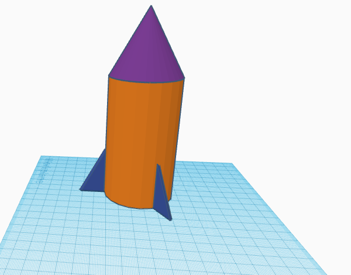

Intro to Engineering (ItE) website
will be incredibly bland since i barely know html
Engineering Journal
sept. 2, 2022
Introduced to Tinkercad and some of the basics. Went over creating holes into basic shapes
using other basic shapes. Created a toaster also :).
Sept. 16, 2022
Built boats from paper it floated for the 5 minutes. Learned that surface area helps boats float
the best and allows them to carry more wieght. Assuming that you oly have one piece of paper and you
can't use tape the best thing to do is to have one flat sheet of paper apparently.
PROJECT 1: Rube Goldberg (Sept. 23, 2022)
The goal of the project was to pop a balloon using a rube goldberg machine made of cardboard
using three basic machines, in our case a pulley, ramp, and wheels. My initial CAD was a pulley
with two cups and putting a baseball in one end will cause the other cup to rise up and hit a car
which then would hit the balloon encased in a box and pop it using a needle. Upon actually trying
to build we had to change one of the cups with an eraser since two cups would hit eachother,
the car instead of being on a flat part of the ramp had to be placed on tape and knocked off
since it was more reliable and easier to set up, and the balloon placed next to a small barrier
instead of in a box since the box would take too much cardboard. The most challenging problem to
fix was setting up the ramp to be stable and be able to be hit and even in the final version is
still unreliable. In the end the ramp was taped to the base plate of the pulley. One of the final
changes made was replacing the system holding the balloon in place from the barrier to taping it
to the table as to allow the car to hit it well enough to pop the balloon. After several attempts
the car was able to pop the balloon.

Sept. 29, 2022
Learned how components in a computer work with eachother. Disassembled
an ancient laptop and identified then labeled parts. Disassembled laptop below.

Oct. 7, 2022
Created a CAD of a prosthetic for any animal. I chose a sea otter's hind flipper.
My CAD is depicted
Oct. 14, 2022
Began CADs for bottle rocket. Goal is to make rocket go the farthest when launched at a 45 degree angle.
made 4 CADs and chose one.

my CAD
Oct. 21, 2022
Finished up with CADS and started to build rockets. Rockets launched friday and ours was da best
so ez. YouTube link https://youtu.be/7AW6oWfmwes the coconut nut is a giant nut...
https://youtu.be/w0AOGeqOnFY
Oct. 27, 2022
Attempted to filter water using cotton, rocks, and sand. The water was only partially filtered.
An image is below that is NOT mine since I don' know where mine went.
Nov. 4, 2022
started unit on electrical engineering and used bread boards on tinkercads so as to not explode
actual leds. Tasked with building two circuits and this one at least worked. Here is an image of my good circuit.
<1>
Nov. 9, 2022
Started on circuits and did some basic circuits. Later we tried to recreate circuits from
W.S. Image is below.
Nov 18, 2022
Built actual circuits using bread boards. Also used arduinos to program the circuits.
Image below.
Dec. 2, 2022
Selected a bridge idea and started assembly. The bridge will use triangles to maintian structural
stability and will resemble a real life bridge. We have to wait until the glue drys which will take
about 1 day.
Dec. 9, 2022
Continued buidling bridges that were similar in design to actual bridges. Idea as to use tringles to
support the bridge. Ends of the bridge were not strong enough so it broke at the weak point.
Dec. 18, 2022
Built the final iteration of the bridge. Based design on bservations of how other bridges worked.
built similarly to a ladder to prevent piching of the two sides and extra support on top. Image
is below
Jan. 13, 2023
Introduced to business engineering which is basically someone who explains concepts to people who
are'nt as familar in them. Learned about UX and UI as well. We pitched engineering ideas to the class.
Mar. 9, 2023
We had a project that spanne over multiple weeks and out of the 3 avalible options (social engineering,
an Arduino car, and a mouse trap car) we chose to build a mouse trap car. During the first week we quickly
modeled a CAD of the design we were going to use. The design would use rulers and it was pretty simple, I
designed it as such so that we could build multiple iterations fast and would stay lighweight. I was absent
for a lot of the time which kind of knee capped how much I could do to help the project. During the last
couple weeks it was a scramble to try and finish the project but by the end we couldn't get it working to
test it with the rest of the cars. After getting an extension we added a more stable base, tried to get
the wheels working, and improved the mouse trap and string assembly. This second iteration was able to be
tested but it couldn't move so that's what ended up being the final product. Below will be an image of the
final mousetrap car.
Mar. 17, 2023
We designed a box with padding and a balloon so that an egg could be placed inside and stay intact after falling
two stories. The box did not work and the egg broke. The balloons did not slow down the box adequetly so it hit the ground
too hard and broke the egg.

Apr. 10, 2023
Last week, I finished the measurements and the CAD of the boat. There is a clear plan about how the boat
will be constructed. It will be a kayak shape with multiple layers of cardboard on the bottom and water proofing
using duct tape.
Apr. 20, 2023
All the parts of the cardboard boat are done, we are waiting for tape. The goal is to have the boat
carry two people across a pool and back without sinking. Our design is a conoe/kayak type thing.
link: https://www.tinkercad.com/things/4UBSTWbhtp9 to the initial boat cad, the boat will be differnt
since it will have triangles on both ends and the dimensions will be a little bit different.
https://www.stanleyparable.com/ https://www.stanleyparable.com/ https://www.stanleyparable.com/
https://www.stanleyparable.com/ https://www.stanleyparable.com/ https://www.stanleyparable.com/https://www.stanleyparable.com/ https://www.stanleyparable.com/ https://www.stanleyparable.com/
https://www.stanleyparable.com/ https://www.stanleyparable.com/ https://www.stanleyparable.com/https://www.stanleyparable.com/ https://www.stanleyparable.com/ https://www.stanleyparable.com/
https://www.stanleyparable.com/ https://www.stanleyparable.com/ https://www.stanleyparable.com/https://www.stanleyparable.com/ https://www.stanleyparable.com/ https://www.stanleyparable.com/
https://www.stanleyparable.com/ https://www.stanleyparable.com/ https://www.stanleyparable.com/https://www.stanleyparable.com/ https://www.stanleyparable.com/ https://www.stanleyparable.com/
https://www.stanleyparable.com/ https://www.stanleyparable.com/ https://www.stanleyparable.com/https://www.stanleyparable.com/ https://www.stanleyparable.com/ https://www.stanleyparable.com/
https://www.stanleyparable.com/ https://www.stanleyparable.com/ https://www.stanleyparable.com/https://www.stanleyparable.com/ https://www.stanleyparable.com/ https://www.stanleyparable.com/
https://www.stanleyparable.com/ https://www.stanleyparable.com/ https://www.stanleyparable.com/https://www.stanleyparable.com/ https://www.stanleyparable.com/ https://www.stanleyparable.com/
https://www.stanleyparable.com/ https://www.stanleyparable.com/ https://www.stanleyparable.com/https://www.stanleyparable.com/ https://www.stanleyparable.com/ https://www.stanleyparable.com/
https://www.stanleyparable.com/ https://www.stanleyparable.com/ https://www.stanleyparable.com/
the end is never the end is never the end is never the end is never the end is never the end is never the end is never the end is never
the end is never the end is never the end is never the end is never the end is never the end is never the end is never the end is never
the end is never the end is never the end is never the end is never the end is never the end is never the end is never the end is never
the end is never the end is never the end is never the end is never the end is never the end is never the end is never the end is never
the end is never the end is never the end is never the end is never the end is never the end is never the end is never the end is never
the end is never the end is never the end is never the end is never the end is never the end is never the end is never the end is never the end is never the end is never the end is never the end is never the end is never the end is never the end is never the end is never
the end is never the end is never the end is never the end is never the end is never the end is never the end is never the end is never
the end is never the end is never the end is never the end is never the end is never the end is never the end is never the end is never
the end is never the end is never the end is never the end is never the end is never the end is never the end is never the end is never
the end is never the end is never the end is never the end is never the end is never the end is never the end is never the end is never
the end is never the end is never the end is never the end is never the end is never the end is never the end is never the end is never the end is never the end is never the end is never the end is never the end is never the end is never the end is never the end is never
the end is never the end is never the end is never the end is never the end is never the end is never the end is never the end is never
the end is never the end is never the end is never the end is never the end is never the end is never the end is never the end is never
the end is never the end is never the end is never the end is never the end is never the end is never the end is never the end is never
the end is never the end is never the end is never the end is never the end is never the end is never the end is never the end is never
the end is never the end is never the end is never the end is never the end is never the end is never the end is never the end is never the end is never the end is never the end is never the end is never the end is never the end is never the end is never the end is never
the end is never the end is never the end is never the end is never the end is never the end is never the end is never the end is never
the end is never the end is never the end is never the end is never the end is never the end is never the end is never the end is never
the end is never the end is never the end is never the end is never the end is never the end is never the end is never the end is never
the end is never the end is never the end is never the end is never the end is never the end is never the end is never the end is never
the end is never the end is never the end is never the end is never the end is never the end is never the end is never the end is never the end is never the end is never the end is never the end is never the end is never the end is never the end is never the end is never
the end is never the end is never the end is never the end is never the end is never the end is never the end is never the end is never
the end is never the end is never the end is never the end is never the end is never the end is never the end is never the end is never
the end is never the end is never the end is never the end is never the end is never the end is never the end is never the end is never
the end is never the end is never the end is never the end is never the end is never the end is never the end is never the end is never
the end is never the end is never the end is never the end is never the end is never the end is never the end is never the end is never the end is never the end is never the end is never the end is never the end is never the end is never the end is never the end is never
the end is never the end is never the end is never the end is never the end is never the end is never the end is never the end is never
the end is never the end is never the end is never the end is never the end is never the end is never the end is never the end is never
the end is never the end is never the end is never the end is never the end is never the end is never the end is never the end is never
the end is never the end is never the end is never the end is never the end is never the end is never the end is never the end is never
the end is never the end is never the end is never the end is never the end is never the end is never the end is never the end is never the end is never the end is never the end is never the end is never the end is never the end is never the end is never the end is never
the end is never the end is never the end is never the end is never the end is never the end is never the end is never the end is never
the end is never the end is never the end is never the end is never the end is never the end is never the end is never the end is never
the end is never the end is never the end is never the end is never the end is never the end is never the end is never the end is never
the end is never the end is never the end is never the end is never the end is never the end is never the end is never the end is never
the end is never the end is never the end is never the end is never the end is never the end is never the end is never the end is never the end is never the end is never the end is never the end is never the end is never the end is never the end is never the end is never
the end is never the end is never the end is never the end is never the end is never the end is never the end is never the end is never
the end is never the end is never the end is never the end is never the end is never the end is never the end is never the end is never
the end is never the end is never the end is never the end is never the end is never the end is never the end is never the end is never
the end is never the end is never the end is never the end is never the end is never the end is never the end is never the end is never
the end is never the end is never the end is never the end is never the end is never the end is never the end is never the end is never the end is never the end is never the end is never the end is never the end is never the end is never the end is never the end is never
the end is never the end is never the end is never the end is never the end is never the end is never the end is never the end is never
the end is never the end is never the end is never the end is never the end is never the end is never the end is never the end is never
the end is never the end is never the end is never the end is never the end is never the end is never the end is never the end is never
the end is never the end is never the end is never the end is never the end is never the end is never the end is never the end is never
the end is never the end is never the end is never the end is never the end is never the end is never the end is never the end is never the end is never the end is never the end is never the end is never the end is never the end is never the end is never the end is never
the end is never the end is never the end is never the end is never the end is never the end is never the end is never the end is never
the end is never the end is never the end is never the end is never the end is never the end is never the end is never the end is never
the end is never the end is never the end is never the end is never the end is never the end is never the end is never the end is never
the end is never the end is never the end is never the end is never the end is never the end is never the end is never the end is never
the end is never the end is never the end is never the end is never the end is never the end is never the end is never the end is never the end is never the end is never the end is never the end is never the end is never the end is never the end is never the end is never
the end is never the end is never the end is never the end is never the end is never the end is never the end is never the end is never
the end is never the end is never the end is never the end is never the end is never the end is never the end is never the end is never
the end is never the end is never the end is never the end is never the end is never the end is never the end is never the end is never
the end is never the end is never the end is never the end is never the end is never the end is never the end is never the end is never
the end is never the end is never the end is never the end is never the end is never the end is never the end is never the end is never